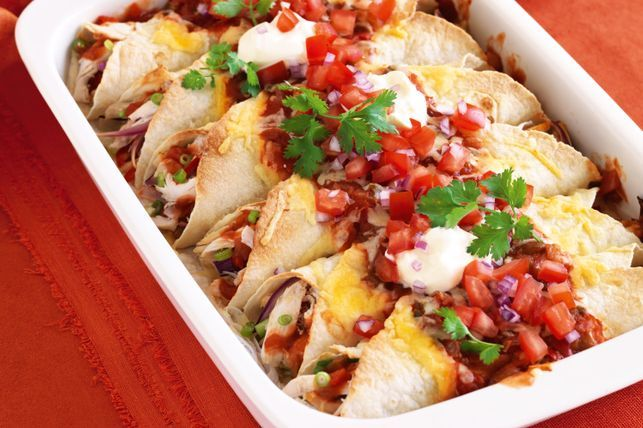

Chicken Enchiladas
Description
My all-time favorite chicken enchilada recipe! See notes above for possible ingredient variations, and notes below for storage and make ahead instructions.

Ingredients
- 2 tablespoons avacado oil
- 1 small onion
- 1-1/2 pounds Chicken
- 1 can diced green chiles
- sea salt & pepper
- 1 can black beans
- 8 flour tortillas
- 3 cups shredded cheese
- 1 can red enchilada sauce
- extra toppings
Instructions
-
Prep oven and enchilada sauce.
Preheat oven to 350°F. Prepare your enchilada sauce.
-
Sauté the filling mixture.
In large sauté pan, heat oil over medium-high heat. Add onion and sauté for 3 minutes, stirring occasionally. Add diced chicken and green chiles, and season with a generous pinch of salt and pepper. Sauté the mixture for 6-8 minutes, stirring occasionally, or until the chicken is cooked through. Add in the beans and stir until evenly combined. Remove pan from heat and set aside.
-
Assemble the Enchiladas
To assemble the enchiladas, set up an assembly line including: tortillas, enchilada sauce, chicken mixture, and cheese. Lay out a tortilla, and spread two tablespoons of sauce over the surface of the tortilla. Add a generous spoonful of the chicken mixture in a line down the center of the tortilla, then sprinkle with 1/3 cup cheese. Roll up tortilla and place in a greased 9 x 13-inch baking dish. Assemble the remaining enchiladas. Then spread any remaining sauce evenly over the top of the enchiladas, followed by any extra cheese.
-
Bake.
Bake uncovered for 20 minutes, until the enchiladas are cooked through and the tortillas are slightly crispy on the outside. Transfer the baking dish to a wire baking rack.
-
Serve.
Serve the enchiladas immediately while they’re nice and hot and melty, garnished with lots of fresh toppings. Enjoy!
Source: https://www.gimmesomeoven.com/best-chicken-enchiladas-ever/